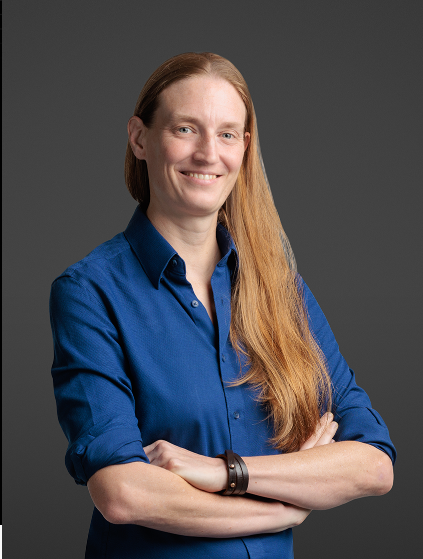

Organizers

Dorien Herremans

Sudipta Chattopadhyay
Soujanya Poria
Roy Lee
We are excited to announce the SUTD AI Day, a half-day event taking place on Friday, April 25, 2025. This premier gathering brings together academic and industry researchers to showcase state-of-the-art advancements, exchange ideas, and foster collaborations in artificial intelligence research.
| Time | Event |
|---|---|
| 09:00 - 09:15 AM | Opening Remarks |
| 09:15 - 10:00 AM | Keynote |
| 10:00 - 11:00 AM | Keynote |
| 11:00 - 11:15 AM | Coffee Break |
| 11:15 - 12:00 PM | Panel Discussion |
| 12:00 - 01:00 PM | Lunch |
| 01:00 - 02:00 PM | Poster Presentations |
To be announced soon
To be announced soon
Researchers present posters and engage with attendees in an interactive exhibition-style setup.
Venture into potential collaborations and career opportunities in AI-related domains.
The Exhibition Booths & Poster Presentations at SUTD AI Research Day provide an engaging platform for researchers to showcase their AI-driven projects, including accepted research and ongoing studies with initial results. This interactive exhibition fosters discussions, knowledge exchange, and networking among academia, industry professionals, and students.
This session is a must-attend for AI enthusiasts, researchers, and industry professionals looking to gain insights, collaborate, and contribute to the advancement of AI.
üëâ Join us at SUTD AI Research Day and be part of the future of AI!
Dorien Herremans
Sudipta Chattopadhyay
Soujanya Poria
Roy Lee


The event will take place at the Singapore University of Technology and Design (SUTD).